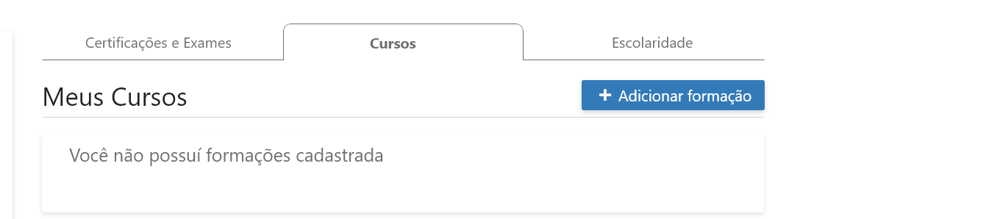

O módulo é para todo #TimeHepta
Somos uma empresa de TI, logo teremos muitas certificações/exames nesta área, mas também contamos com profissionais formados nas mais diversas áreas, por isso, o módulo de certificações é para todo #TimeHepta.
O que deve ser cadastrado?
Toda e qualquer certificação e certificado de cursos, indiferentemente de carga horária e escolaridade.
Exames e certificações
Todos os exames/provas e certificações dos diferentes fornecedores (AWS, Microsoft, Citrix, HDI, etc) devem ser inseridos no sistema. Lembre-se que algumas provas são utilizadas para mais de uma certificação, por isso, é muito importante que o colaborador cadastre todas as provas que fez e, também as certificações.
Não se preocupe se o exame/certificação que você fez não estiver na lista. Clique aqui para indicar seu certificado que a Academia Hepta irá cadastrar e te informar quando estiver disponível.
Cursos
Sabe aquele curso de 10h que você fez em alguma instituição de ensino, como a Introdução à Lei Brasileira de Proteção de Dados Pessoais da ENAP, por exemplo? Então, o certificado desse curso também pode ser cadastrado em Cursos.
Escolaridade
O grau de escolaridade é muito importante para conhecermos o nível de capacitação de nossos colaboradores, por isso, mantenha esse cadastro atualizado mesmo que no momento seja “cursando”, ao concluir a formação é só voltar ao formulário e atualizar.
Certificações e exames técnicos que foram descontinuados
Sim. Mesmo que você tenha alguma certificação ou exame que foram descontinuados ou perderam a validade, devem ser cadastradas pois consideramos que elas também são relevantes para a compreensão do processo de aprendizagem do nosso colaborador.
Não encontrou na lista do módulo o que procurava?
Não se preocupe se o curso, certificação ou exame que você fez não estiver na lista é clicar aqui para indicar seu certificado que a Academia Hepta irá cadastrar e te informar quando estiver disponível.
Sem nenhum certificado, certificação ou exame para cadastrar
Clique no link “Confirmar que meu cadastro está atualizado” nas abas de Exames e Certificações e em Cursos. Agora, você deve preencher apenas o formulário de Escolaridade. Todas essas informações são muito importantes para traçarmos as melhores práticas e trilhas de aprendizagem para o crescimento profissional do nosso #capitalhumano.
Quando fazer o cadastro
Sempre que concluir um curso, for aprovado em um exame, tirar uma certificação, formação concluída ou em andamento, deve realizar o cadastro, dessa forma, você mantém seus dados atualizados.
Conhecendo o formulário
Além da FAQ para você tirar dúvidas, existem 3 abas de cadastros diferentes para você manter atualizados: Certificados e Exames, Cursos e Escolaridade.
Certificação / Exame
Em certificação/Exame, ao começar a digitar pelo termo da certificação, exame ou fornecedor irá aparecer uma lista para que você encontre mais rápido o que procura.
Se preferir, antes de digitar no campo, confira a lista completa que está organizada por ordem alfabética.

Se você não encontrar sua prova ou certificação na lista, basta clicar no link disponível na parte inferior do cadastro e preencher o formulário com os dados solicitados.
Em documento, selecione certificado para comprovar a realização da certificação ou exame informado. O sistema aceita arquivo em PDF com limite de tamanho de até 1GB.

Por fim, informe a data de emissão e data de validade (se houver) e envie. Se mudar de ideia e quiser cadastrar em outro momento é só cancelar ou sair da página.

Sem nenhum certificado, certificação ou exame para cadastrar, isso significa que o seu cadastro está atualizado, portanto, clique no botão “cadastro atualizado” // clique no link “Confirmar que meu cadastro está atualizado”. Essa informação também é muito importante para traçarmos as melhores práticas e trilhas de aprendizagem para o crescimento profissional do nosso #capitalhumano.
Agora que você já sabe por que é importante manter seu cadastro atualizado, mesmo que não haja certificações/exames no momento, o que e como cadastrar, não perca tempo e acesse o Módulo de Certificações e Exames no Nossa Hepta.
Em caso de dúvidas e sugestões, envie e-mail para academia@hepta.com.br
Cursos
Sem nenhum curso para cadastrar, isso significa que o seu cadastro está atualizado, portanto, clique no link “Confirmar que meu cadastro está atualizado”. Essa informação também é muito importante para traçarmos as melhores práticas e trilhas de aprendizagem para o crescimento profissional do nosso #capitalhumano.

Para cadastrar os seus cursos, clique em Adicionar Curso e preencha o formulário abaixo.
Os campos Nome do curso e Instituição são livres, ou seja, não há uma lista prévia com opções para serem selecionadas.

Preencha a carga horária e ano de conclusão. Em Certificado, selecione o documento para comprovar a realização do curso informado.
O sistema aceita arquivo em PDF com limite de tamanho de até 1GB.

Logo abaixo, existe um campo para que possa fazer uma descrição e inserir informações sobre o curso cadastrado. Por último, clique em salvar .
Se mudar de ideia e quiser cadastrar em outro momento é só cancelar ou sair da página.

Escolaridade
Em escolaridade, o campo é uma lista suspensa com todos os graus/níveis de escolaridade do básico ao avançando, selecione o grau em que se enquadra para continuar preenchendo o formulário.

Informe o nome do Curso conforme reconhecido pelo MEC (Ministério da Educação).

Em Instituição, ao começar a digitar pelo menos 5 letras do nome da instituição irá aparecer uma lista para que você encontre mais rápido o que procura.

Se não encontrar a sua instituição clique no link de email abaixo do campo para solicitar a inclusão e volte para preencher quando estiver cadastrada.

Continuando, informe a carga horária e data de conclusão ou previsão de término.

Por fim, selecione o documento para comprovar a situação da escolaridade, pode ser uma declaração de matrícula ou certificado, depois é só salvar.
O sistema aceita arquivo em PDF com limite de tamanho de até 1GB.